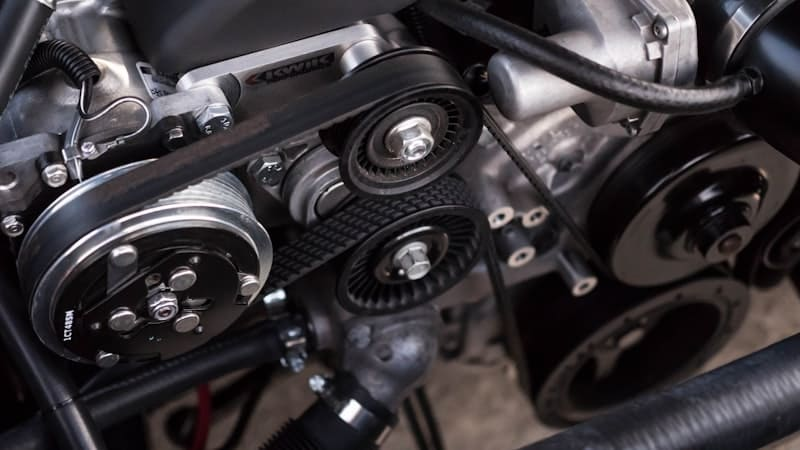

Ihr Leitfaden zum erfolgreichen Gebrauchtwagenkauf
Der Kauf eines Gebrauchtwagens, Nutzfahrzeugs oder einer Maschine will gut überlegt sein. Bei CB Handels GmbH stehen Qualität, Transparenz und erstklassiger Service im Mittelpunkt. Mit unserer Checkliste finden Sie das perfekte Fahrzeug oder die passende Maschine zum fairen Preis – ohne böse Überraschungen. Wir sind Ihr langfristiger Partner, der auch nach dem Kauf für Sie da ist.
Vor dem Kauf: Die richtige Vorbereitung
1. Budget festlegen
Kaufpreis + 10-15% Nebenkosten (Zulassung, Versicherung, Steuern, Service)
2. Finanzierung klären
Optionen: Barzahlung (Verhandlungsspielraum), Kredit (Liquidität erhalten) oder Leasing (niedrige Raten, kein Eigentum)
Die Fahrzeugsuche
Professioneller Händler (wie CB Handels): Gewährleistung, geprüfte Fahrzeuge, Beratung
Privatkauf: Oft günstiger, aber keine Gewährleistung, höheres Risiko
Empfohlene Marken
Top-Zuverlässigkeit: Toyota, Honda, Mazda, Škoda, VW
Die Besichtigung: Checkliste
Außencheck
Ausschlusskriterien: Rost, große Beulen, ungleichmäßige Spaltmaße, verschiedene Farbtöne
Magnet-Test: Karosserie sollte magnetisch sein (keine Spachtelmasse)
Reifen: Profiltiefe mind. 3 mm, alle 4 gleich, max. 6 Jahre alt
Innenraumcheck
Gepflegter Zustand, keine starken Gerüche
Abgenutzte Pedale bei niedriger Laufleistung, Wasserflecken, Muffelgeruch
Elektronik testen
Klimaanlage, Heizung, Radio/Navi, Fensterheber, Zentralverriegelung, Airbag-Warnleuchte
Motorraum
Sauber, trocken, keine Lecks, Ölstand korrekt
Die Probefahrt
Test-Route: Stadt, Landstraße, Autobahn (mind. 30 Min)
Gut: Samtiges Schaltgefühl, gleichmäßiger Lauf, saubere Beschleunigung
Schlecht: Ruckeln, Stottern, Klappern, Pfeifen
Dokumente prüfen
Pflicht: Zulassungsbescheinigung Teil I & II, Service-Heft
Nice to have: Rechnungen, TÜV-Gutachten, Kaufvertrag
Preis verhandeln
Ziel: 5-15% unter Angebotspreis
1. Marktwert ermitteln (Eurotax, Vergleichsinserate)
2. Mängel dokumentieren
3. Sachlich verhandeln
Der Kaufvertrag
Händlerkauf: 12 Monate Gewährleistung bei Gebrauchtwagen (Fahrzeuge über 3 Jahre)
Vorsicht bei "Verkauf unter Ausschluss jeglicher Gewährleistung" – bei Händler oft unwirksam!
Häufige Fallen vermeiden
Tacho-Manipulation: Unrealistisch niedrige Laufleistung
Versteckte Unfallschäden: Ungleiche Spaltmaße, Überlackierungen
Motor-/Getriebeschaden: Ölverlust, unrunde Laufleistung
Schutz: Profi-Check beim ÖAMTC/ARBÖ (€ 100-200), Carfax-Report, OBD2-Diagnose
Warum bei CB Handels kaufen?
Ihre Vorteile – Qualität, Transparenz und erstklassiger Service
100% geprüfte Fahrzeuge und Maschinen: Sorgfältiger Qualitäts-Check, keine Unfallwagen, professionelle Aufbereitung. Gilt für Pkw, Nutzfahrzeuge und Maschinen.
Transparente Preise – keine Überraschungen: Faire Marktpreise, keine versteckten Kosten, ehrliche Beratung zu Preis und Wert
Umfassende Garantie und Service: Mindestens 12 Monate Gewährleistung, langfristige Partnerschaft auch nach dem Kauf
Rundum-Service – Ihr Partner für alles: Finanzierung, Versicherung, Zulassung, kostenlose Probefahrt, kompetente Beratung
Unser Versprechen: "CB Handels GmbH steht für Qualität, Transparenz und erstklassigen Service. Bei uns kaufen Sie nicht einfach nur ein Fahrzeug oder eine Maschine – Sie gewinnen einen langfristigen Partner, der auch nach dem Kauf für Sie da ist."
Bereit für Ihr Traumfahrzeug oder Ihre Maschine?
Zur Fahrzeugsuche – von Pkw über Nutzfahrzeuge bis hin zu Maschinen
CB Handels GmbH
Auenfischerstraße 53a, 9400 Reichenfels
Telefon: +43 664 3882323
E-Mail: cbhandel.at@gmail.com
Weitere Artikel: